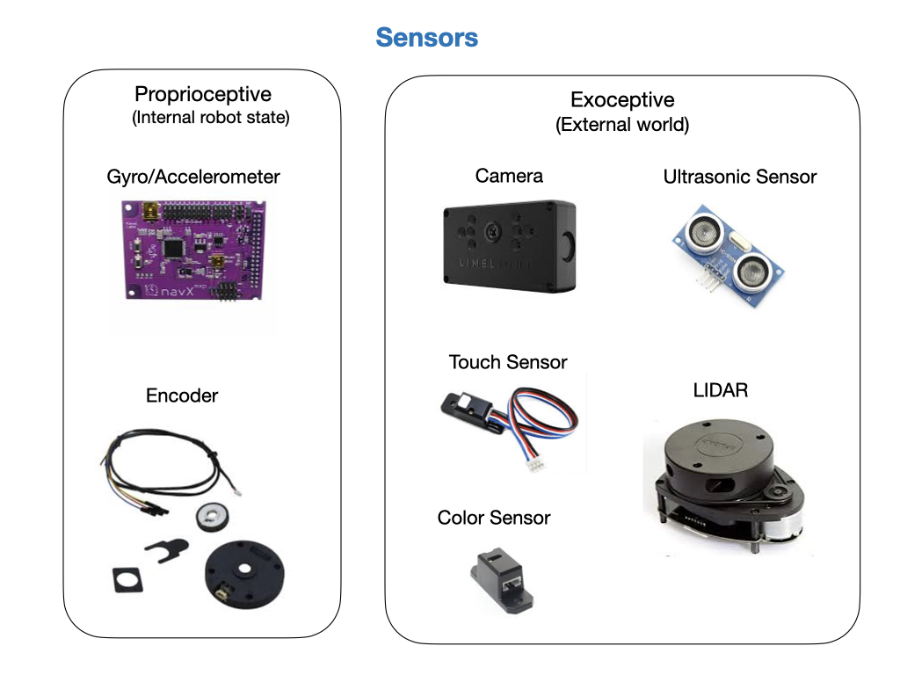
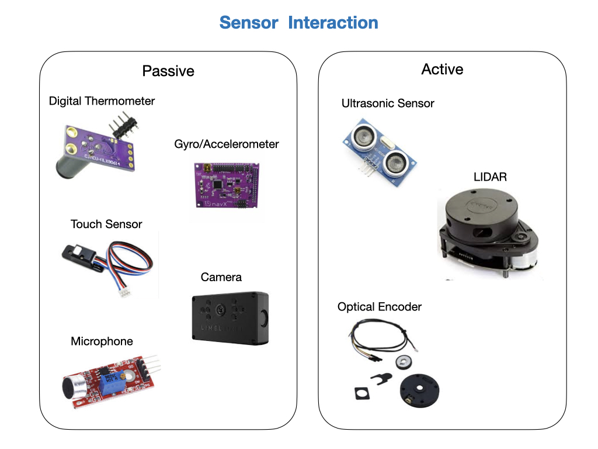
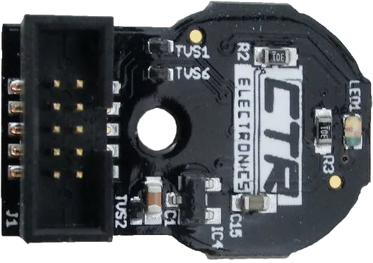
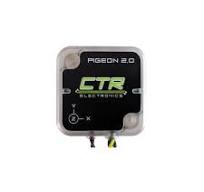
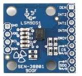
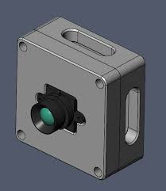
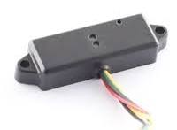
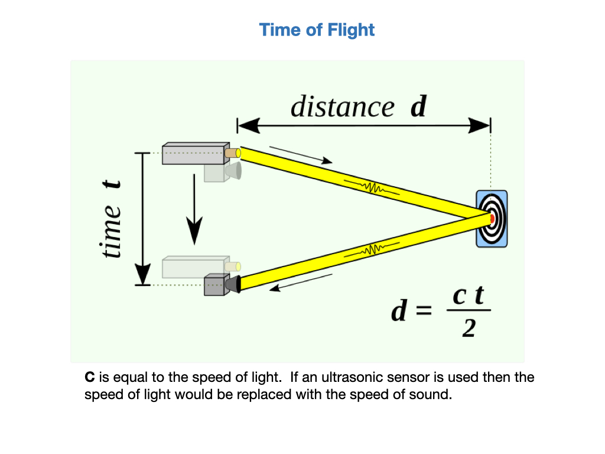
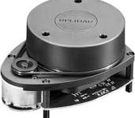

Sensors
There are two broad categories of sensors used in robotics:
Proprioceptive sensors measure values internal to the robot; e.g. motor speed, acceleration, direction, battery voltage.
Exteroceptive sensors acquire information from the robot’s environment; e g. distance measurements, light intensity, sound amplitude. Exteroceptive sensor measurements are interpreted by the robot in order to extract meaningful features from its surroundings.

Sensor Interaction
There are two main ways in which sensors interact with the surrounding world:
Passive sensors measure ambient environmental energy entering the sensor. Examples of passive sensors include temperature probes, microphones, contact switches, compasses, and cameras.
Active sensors emit energy into the environment, then measure the environmental reaction. Examples would be ultrasonic sensors, laser rangefinders, and optical encoders.

Encoders
{kind=link}

In FIRST Robotics Competition (FRC), encoders are sensors that measure rotational motion, like how far a robot’s wheels have turned, which allows the robot to track distance, speed, and position. FRC robots commonly use two main types of encoders: Quadrature Encoders, which count pulses to measure relative movement and direction, and Absolute Encoders, which report their current absolute position (like angle) even after a power cycle.
How they work
Rotary Motion: Encoders are attached to a rotating shaft, such as a wheel axle or a motor.
Light/Magnetic Detection: Inside the encoder, a rotating disk with patterns or magnets interacts with a light source and a photosensor, or with a magnetic sensor.
Signal Output: This interaction creates digital pulses or a continuous signal that is sent to the robot’s controller.
Types of FRC Encoders
- Quadrature Encoders:
These are incremental encoders that produce two channels of square-wave signals (Phase A and Phase B).
By comparing when each phase gets a pulse, the software can determine the direction and amount of rotation.
The main drawback is they only track relative distance; if power is lost, the robot doesn’t know its position without another sensor or reset.
Absolute Encoders:
These encoders maintain their recorded position and report a consistent angle, even after the robot loses power.
They are crucial for systems like swerve drives, where each wheel needs a known starting orientation when the robot powers on.
Absolute Position Encoders can output information as a voltage signal, a digital pulse-width modulation (PWM) signal, or a duty cycle signal.
Why they are used in FRC
Measuring Distance: Encoders are vital for a robot’s autonomous movement, letting the robot know how far it has traveled.
Controlling Speed: By tracking rotations over time, the software can calculate speed and maintain it for a mechanism or the robot’s drive train.
Positioning Mechanisms: They provide information on the angle or position of moving parts, such as an arm, allowing for precise autonomous control.
Field-Oriented Control: For advanced swerve drive systems, absolute encoders are used to ensure each wheel is correctly aligned at startup, enabling precise control.
For more information see the FRC Documentation - Encoders
Gyros

An FRC gyro is a sensor, also known as a gyroscope or Inertial Measurement Unit (IMU), used in the FIRST Robotics Competition to measure a robot’s rate of rotation around one or more axes, enabling it to maintain a heading, turn accurately, and provide stable driving performance. Gyros are essential for tasks like driving in a straight line or making precise turns and are often integrated with accelerometers in IMUs to provide a comprehensive picture of the robot’s motion.
What Does a Gyro Do?
Measures rotational rate: A gyro’s primary function is to detect how fast the robot is spinning around an axis.
Measures heading: By integrating the rotational rate, the gyro can calculate the robot’s current heading (angle).
Stabilizes driving: The gyro provides data that allows the robot’s software to make real-time corrections to steering, keeping it on a straight path, according to ScreenSteps.
Enables autonomous movements: Gyros help robots turn to a specific angle, allowing for more precise autonomous routines.
Types of Gyros in FRC
Single-axis gyros: Measure rotation about one axis.
Three-axis gyros: Measure rotation around all three spatial axes (pitch, yaw, and roll), providing more complete motion data.
Inertial Measurement Units (IMUs)
IMUs are multi-sensor devices that combine a gyroscope with other sensors, such as accelerometers and magnetometers.
These integrated units provide a more comprehensive understanding of the robot’s motion than a standalone gyro.
How they are used?
Calibration: Gyros require a brief calibration period when the robot powers on to establish a baseline for the “zero” heading.
Software Integration: The WPILib software library provides classes and functions for creating, configuring, and reading data from gyros.
For more information see the FRC Documentation - Gyros
Accelerometers

An FRC accelerometer is a sensor that measures the rate of change of velocity (acceleration) for a FIRST Robotics Competition (FRC) robot, often used to detect collisions, falls, or to help estimate motion in three axes (X, Y, Z). It can be the built-in accelerometer on the roboRIO or a peripheral device, sometimes combined with gyroscopes in an Inertial Measurement Unit (IMU), which may connect to the roboRIO via analog inputs or serial buses like I2C or SPI.
How FRC Accelerometers Work
Measurement: Accelerometers detect motion and impact by measuring the inertial force on a small internal mass.
Output: This force is converted into an electrical signal, which is read by the robot’s control system.
Three-Axis: Most FRC accelerometers are three-axis, providing data for forward/backward (X), left/right (Y), and up/down (Z) movement.
Units: The data is returned in units of “g’s,” where 1 g is approximately 9.81 m/s².
Types of Accelerometers in FRC
Built-in Accelerometer: The roboRIO microcontroller comes with its own three-axis accelerometer that requires no external connections.
Peripheral Accelerometers: Teams can purchase external single-axis or multi-axis accelerometers that connect to the roboRIO’s analog input ports or serial buses.
Inertial Measurement Units (IMUs): These devices combine an accelerometer with a gyroscope, allowing for more advanced motion tracking. Popular examples include the CTRE Pigeon IMU and the Kauai Labs NavX.
Common Uses in FRC
Detecting collisions: The impact of a collision causes a sudden change in acceleration.
Identifying falls: An accelerometer can tell if the robot has fallen or tipped over.
Motion estimation: By double-integrating accelerometer data, a robot’s position can be estimated, though this is challenging with the noisy data from FRC-class accelerometers.
Autonomous behaviors: Accelerometer data can be used for simple motion detection or more complex tasks like controlling robot speed and orientation.
For more information see the FRC Documentation - Accelerometers
Cameras

An FRC Camera is a camera integrated into a FIRST Robotics Competition (FRC) robot to provide either a direct view to the driver or to be used for automated vision processing. It can stream video to the driver station for situational awareness or process images on the robot or a connected coprocessor to identify game objects, calculate their distance and position, and help the robot autonomously score or navigate. Specialized cameras, like the Limelight, combine a camera, LEDs, and a co-processor for advanced targeting and object detection.
The camera corresponds to the eye in the robot. The images obtained from the camera are very useful for recognizing the environment around the robot. For example, object recognition using a camera image, facial recognition, a distance value obtained from the difference between two different images using two cameras (stereo camera), mono camera visual SLAM, color recognition using information obtained from an image and object tracking are very useful.
Uses in FRC
Driver Vision (Streaming): Teams often use cameras to stream the robot’s perspective to the driver station, providing a wider view and helping the driver see what the robot sees.
Automated Vision Processing: More complex systems process images to extract data about targets and game pieces. This information is used for:
Targeting: Aiming to score game objects.
Object Detection: Identifying the position, distance, and orientation of game pieces.
Autonomous Navigation: Guiding the robot to specific points on the field.
Types of FRC Cameras
Standard USB/Ethernet Cameras: These are the most basic type, offering a single image output and are managed by the CameraServer for use in the robot code.
Specialized Vision Cameras: Devices like the Limelight are designed specifically for FRC, integrating a camera, LED ring light, and a co-processor for advanced vision tasks.
Coprocessors: Powerful single-board computers, such as a Raspberry Pi or Jetson, can be used to run computer vision programs like OpenCV, GRIP or Photon Vision, process video from multiple cameras, and perform advanced machine learning.
Distance Sensors

Robots rely heavily on Active Ranging for obstacle detection and avoidance. Common active ranging sensors are ultrasonic sensors and laser rangefinders. Active ranging sensors are also used extensively for mapping and localization. The physics behind these types of sensors is Time of Flight. Time of Flight is a measurement of the time it takes for a sound or light wave to travel from a emitter and back to a receiver after bouncing off of an object. The time taken is used to calculate the distance, or range, to the object.

Laser Distance Sensors (LDS)

Laser Distance Sensors (LDS) are referred to various names such as Light Detection And Ranging (LiDAR), Laser Range Finder (LRF) and Laser Scanner. LDS is a sensor used to measure the distance to an object using a laser as its source. The LDS sensor has the advantage of high performance, high speed, real time data acquisition, so it has a wide range of applications in relation to distance measurement. This is a sensor widely used in the field of robots for recognition of objects and people, and distance sensor based SLAM (distance-based sensor), and also widely used in unmanned vehicles due to its real time data acquisition.
The LDS sensor calculates the difference of the wavelength when the laser source is reflected by the object. A typical LDS consists of a single laser source, a reflective mirror, and a motor. When you drive the LDS, you can hear the sound of the rotating motor, because it rotates the inner mirror and scans the laser in a horizontal plane. Typically measures from 180 to 360 degrees, depending on the product.
Because it measures the return of the laser source, therefore, is useless if nothing is reflected. In other words, transparent glass, plastic bottles, glass cups are tend to reflect or scatter the laser source in many directions. And for mirrors, lights are reflected back to the mirror making it inaccurate measurement.
Also, because the horizontal plane is scanned, only objects on the horizontal plane are detected by the sensor. In other words, you need to know that it is 2D data.
There are infinite usages of LDS, and SLAM (Simultaneous Localization And Mapping) is one of the most well known examples of using LDS. SLAM creates a map by recognizing obstacles around the robot and estimates current position of the robot within a map. As another example of using LDS, the robot is able to detect various objects in the surroundings and react based on the current environment.
References
FRC Documentation - Sensors
QUT Robot Academy - Measuring Motion
Alonzo Kelly - Mobile Robotics Chapter 6.2